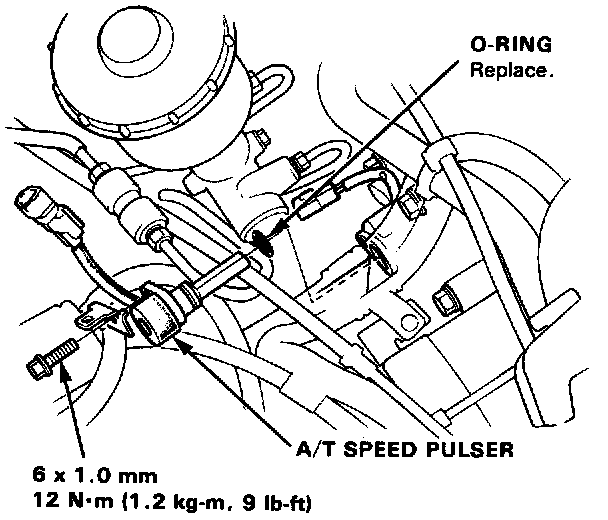
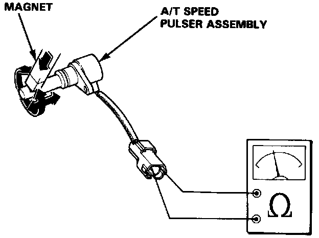

Transmission Speed Sensor: Service and Repair

A/T Speed Pulser Removal/Inspection
1. Remove the 6 mm bolt from the transmission housing and remove the A/T speed pulser assembly.

2. Bring a magnet close to the A/T speed pulser assembly and check for continuity.
A/T speed pulser assembly is in good condition if there is:
- Continuity with a magnet close to the pulser assembly.
- No continuity with a magnet away from the pulser assembly.
If the A/T speed pulser is normal, inspect A/T Speed Pulser Rotor (part of 2nd Accumulator Body).
3. Replace the O-ring with a new one before reassembling the A/T speed pulser.
CAUTION: Carefully inspect the A/T speed pulser before installing. Do not install if it shows signs of being dropped or improperly handled.